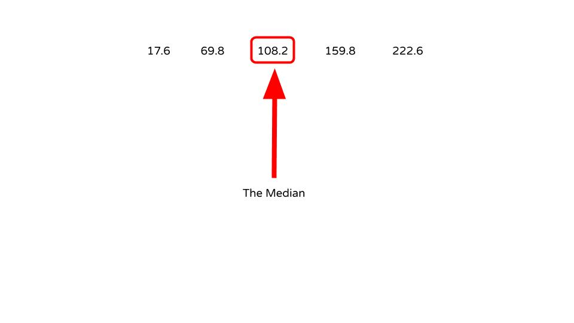

The Median Example
The following data is the number of tablet sales in millions of units for a 5-year period.
| 108.2 | 17.6 | 159.8 | 69.8 | 222.6 |
| 17.6 | 69.8 | 108.2 | 159.8 | 222.6 |

The median number of tablet sales for the 5-year period is 108.2 million.
The data is the number of tornadoes that have occurred in the United States over an 8-year period follows.
| 684 | 764 | 656 | 702 | 856 | 1133 | 1132 | 1303 |
| 656 | 684 | 702 | 764 | 856 | 1132 | 1133 | 1303 |
| 656 | 684 | 702 | 764 | 856 | 1132 | 1133 | 1303 |
\[\text{MD}=\frac{764+856}{2}=\frac{1620}{2}=810\]
The median number of tornadoes is 810.